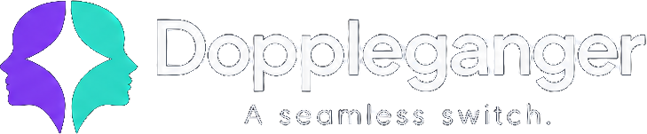

Step away from the camera. Nobody notices.
Doppleganger records a short, seamless loop of you, then lets you cut between it and your live webcam in Zoom, Teams or Meet with one key.
Choose your computer below.
Download
Installing on Windows
- Open DopplegangerSetup.exe. If Windows shows "Windows protected your PC", click More info → Run anyway.
- The setup guide adds the Doppleganger camera, helps you pick your webcam and record your first loop.
- In Zoom or Teams, choose Doppleganger as your camera.
Installing on a Mac
- Open the .dmg and drag Doppleganger onto Applications.
- The first time, right-click Doppleganger → Open. (macOS 15+: if there's no Open button, go to System Settings → Privacy & Security → Open Anyway.)
- Install OBS Studio (free). Doppleganger uses its virtual camera, and the setup guide walks you through the one-time steps.
- In Zoom, Teams or Meet, choose OBS Virtual Camera.
All downloads
Not sure which Mac you have? Apple menu → About This Mac. "Chip: Apple M…" means Apple Silicon; "Processor: Intel" means Intel.